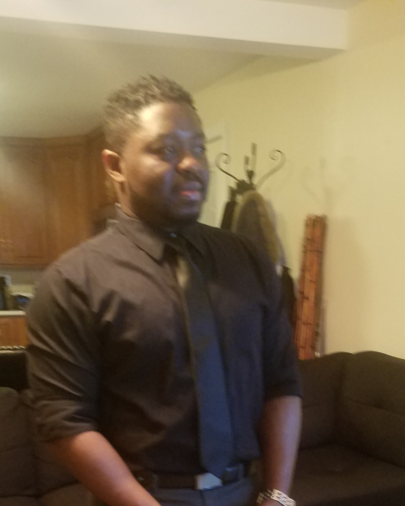

About Me
Hi, my name is Connolly Destin.
I came to America when I was 15, I discovered computers from my 3-year little brother and my dad. I have been obsessed with computers ever since.
After high school, I enrolled at ITT and graduate with associate degree Computer and Electronics Engineering Technology.
I build and fix computer for friends and family as a hobby I love working computer hardware and software support roles. Then I started to develop some passion for programming.
I Realizing the new programming is on the internet. I'm enrolled in the University of New Hampshire Boot Camp to become a full stack web developer.